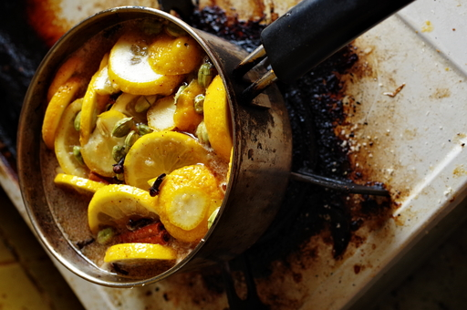

05 月 08日 ( 月 )
コーラをつくった
コーラを作ってみた。いわゆるクラフトコーラってやつ。

レシピ
材料
- レモン輪切り 2 個分
- 生姜輪切り 0.5 個分
- カルダモン 20 粒
- グローブ 20 粒
- シナモン 3 本
- ナツメグ 小さじ 1/4
- ブラックペッパー 10 粒 ( なくても良い )
- 砂糖 300g
- 黒糖 100g ( 色にこだわらないなら砂糖 100g に置き換えてもよい )
- 水 400cc
作り方
- レモンを輪切りにする
- 生姜を輪切りにする
- カルダモンに切れ目を入れる ( 香りが出やすいように )
- シナモンは元の大きさにもよるが 2 〜 3 分割するように割る
- 材料すべてを鍋に入れる
- 砂糖や黒糖が焦げないようにときおり混ぜながら中火で煮る
- 沸騰したら弱火にして砂糖や黒糖が焦げないようにときおり混ぜながら 10 分程度煮る
- 10 分経ったら火を止めて粗熱をとる
- 粗熱がとれたら熱湯消毒しておいた容器に入れ替える ( 具材も入れるかどうかはお好みで )
- 冷蔵庫で 1 晩寝かして出来上がり
いただき方
無糖無臭の炭酸水 ( ex. Wilkinson 等 ) で好みの濃さに割って飲む。筆者は 2 : 10 くらいの比率で割ったのが好みだが、材料の分量によりいいお味になる比率は異なるので、自身の舌で確認のこと。
まとめ
自家製クラフト・コーラは材料を切って煮るだけで簡単に作ることができ、原液の濃さだけでなく、材料の比率や材料の変更などによりマイ・コーラを追求できるので楽しい。
作った原液を持ち出して、コンビニで炭酸水を買って野外で自家製クラフト・コーラを楽しむ、といった楽しみ方もある。またキャンプのときなど原液をキャンプ場で作っても楽しいかもしれない。
- Category :
- 日記
- blog
- 料理
- クラフト・コーラ
- スパイス